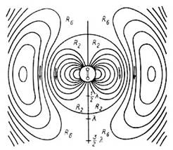
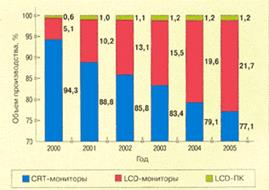
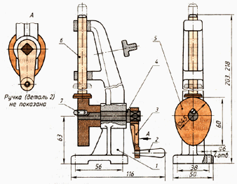

Компьютерлік графика – әр түрлі кескіндерді (суреттерді, сызбаларды, мультипликацияларды) компьютердің көмегімен алуды қарастыратын информатиканың маңызды саласы.
Дербес компьютерді пайдаланушылардың қатарында компьютерлік графикамен айналысатындардың саны күн санап артып келеді. Қазіргі кез-келген мекемеде кей уақытта газеттер мен журналдарға жарнамаларға тапсырыс беру немесе жарнамалық парақшалар мен буклеттер басып шығару қажеттілігі туындайды. Олардың кейбіреулері осындай жұмыстарды арнайы дизайнерлік бюролар мен жарнамалық агенттіктерге тапсырса, кейбіреулері қолда бар программалық құралдарын пайдаланып, өз күштерімен жасауға тырысады.
Қазіргі танымал программалардың ешқайсысы компьютерлік графикасыз жұмыс істемейді. Статистикаға сүйенсек, жаппай қолданыста жүрген программаларды жасап шығарушы программистік ұжымның қызметкерлері өз жұмыстарының 90 % уақытын осы графикамен шұғылдануға жұмсайды екен.
Графикалық программаларды кез кезде қолдану қажеттілігі.Интернеттің және бірінші кезекте миллиондағн интернет парақтарын бір «өрмекпен» байланыстырєан World Wide Web қызметінің пайда болуынан туындады.Өйткені компьютерлік графикасыз безендірілген web-парақтың бүкіләлемдік желіде басқалардың көзіне түсіп, танымал болуы екіталай.
Қазіргі компьютерлік графика тек көркемдеу мен безендірумен үшін ғана емес, ғылым мен медицинаның барлық саласында, коммерциялық және әкімшілік қызмет орындарында алуан түрлі ақпаратты көрнекі түрде көрсету үшін сызбалар, графиктер, диаграммалар жасау үшін қолданылады.
Конструкторлар автомобильдің немесе ұшақтың жаңа үлгілерін құрастырған кезде олардың соңғы көрінісін алу үшін графикалық объектілерді қолданады. Архитекторлар монитор экранында болашақ ғимараттың кез келген кескінін жасап, оның жер бедерімен қалай жанасатынын алдын-ала болжай алады.
Қазiргi компьютерлік графика қолданылу әдісі бойынша мынадай негізгі салаларға бөлінеді:
Инженерлік графика – жобалау жұмыстарымен айналысатын барлық аумақтарда қолданылаы. Қарапайым киім тігу үлгісінен бастап ракета үлгісін жасауға дейін жаңа заманның инженерлік графикасы – сызушының жұмыс орны емес, ол қиын программалық кешен болып табылады. Осындай жүйелерді қолдану арқылы жобалауға кеткен уақыт мерзімі елеулі түрде қысқарып, жаңа өнім тез шығарылады және олардың сапасы мен сенімділігі артады.

Web-графика. Web- беті WWW-да орналастырылған және гипермәтін форматында дайындалған құжат болып табылады. Олай болса, осы Web- бетінің дизайны мен оны құратын графикалық элементтерді де тиімді пайдалану, графикалық элементтердің көмегімен бетті бөліктерге бөлу, түстік модельдерді тиімді қолдану және тағы басқа да мәселелерді шешеді.Ғылыми графика. Алғашқы компьютерлер тек ғылыми және өндірістік есептерді шығару үшін қолданылды. Есептерден шыққан нәтижелерді дұрыс түсіну үшін оларды графикалық тұрғыда өңдеп, графиктер, мен диаграммалар, сызбалар тұрғызған. Машинадағы алғашқы графиктерді символдық режимде басып шығаратын. Кейін сызбалар мен графиктерді қағазға қаламұштың көмегімен сызатын арнайы құрылғылар – графиксалғыштар (плоттерлер) пайда болды.
Қазіргі заманғы ғылыми компьютерлік графика әр түрлі есептеу тәжірибелерін жүргізіп, олардың нәтижесін көрнекі түрде көрсетуге мүмкіндік береді.

Іскерлік графика – қандай да бір мекеме жұмысының көрсеткіштерін көрнекі түрде ұсыну үшін қолданылатын компьютерлік графиканың маңызды саласы. Іскерлік графиканың көмегімен жоспар көрсеткіштерін, есеп құжаттарын, статистикалық есептерді және т.б. объектілерді көрнекі түрде ұсынуға болады. Іскерлік графиканың программалық жабдықтары электронды кестелердің құрамында болады.
|
 |
Контрукторлық графика - инженер-конструкторлардың, архитекторлардың, жаңа техниканы ойлап шығарушы өнертапқыштардың жұмысында қолданылады. Компьютерлік графиканың бұл түрі САПР-дың(систем автоматизации проектирования- жобалауды автоматтандыру жүйесі) міндетті элементі болып табылады. Конструкторлық графика құралдарын пайдалана отырып жазықтққтағы кескіндерді (проекциялар, сызбалар) ғана емес, кеңістіктегі кескіндерді де жасауға болады.
|
|
Суреттеу графикасы (көркем графика) деп компьютер экранында ерікті түрде сурет салу мен сызуды айтады. Суреттеу графикасының пакеттері жалпы мақсатта пайдаланылатын қолданбалы программалық жасақтамалардың қатарына енеді. Суреттеу графикасында қолданылатын қарапайым программалық жабдықтарды графикалық редакторлар деп атайды.
|
|
Жарнамалық графика – теледидар пайда болғаннан кейін танымал бола бастады. Қазір компьютердің көмегімен жарнамалық роликтер, мультфильмдер, компьютерлік ойындар, видеодәрістер мен видеопрезентациялар жасалады. Оларды жасау үшін қолданылатын графикалық пакеттер осы мақсатта қолданылатын компьютерлердің жады мен жұмыс істеу жылдамдығына үлкен талап қояды. Осы графикалық пакеттердің басты ерекшелігі ретінде олардың шыншыл кескіндер мен «қозғалатын суреттерді» жасау мүмкіндігін айтуға болады. Үшөлшемді объектілерден тұратын суреттерді салу, оларды бұру, жақындату, аластату, деформациялау үлкен көлемде математикалық есептеулерді қажет етеді. Мысалға, объектінің жарықтылық деңгейін сол объектіге түсіп тұрған жарық көзін, оны қоршаған заттардың, олардың көлеңкелерін есепке ала отырып бейнелеу үшін оптиканың заңдарын есепке алатын күрделі есептеулерді жүргізу қажет.
|
|
Компьютерлік анимация деп дисплей экранында қозғалатын кескіндерді жасау өнерін айтады. Суретші қозғалатын объектінің бастапқы және соңғы қалпын бейнелейтін суреттерді ғана салады, ал осы екі суреттің арасындағы барлық қозғалысты компьютер осы объектіні қозғалтуға қажетті алдын-ала белгіленген математикалық есептеулерді орындай отырып өзі суреттеп шығады. Белгілі бір жиілікпен бірінен кейін бірі пайда болатын осындай суреттердің жиынтығы экранда қозғалатын суреттерді бейнелеуге мүмкіндік береді.
Мультимедиа деп - компьютер экранындағы жоғары сапалы кескінді дыбыстық сүйемелдеумен біріктіруді айтады. Мультимедиа құралдары оқу-ағарту саласында, электронды ақпарат құралдарында және т.б. мақсатта қолданылады. Мультимедиа мүмкіндіктерін толық пайдалану үшін компьютерге арнайы программаларды орнатып қана қоймай, арнайы құрылғыларды қосу қажет.
Бақылау сұрақтары:
1.Кескіндерді тану немесе техникалық көру жүйесі дегеніміз не?
2.Бейнелерді і ӛңдеу жұмыстарына қандай жұмыстар жатады?
3.Компьютерлік графика нені зерттейді?
4.Автоматтандырылған жобалау жүйелері дегеніміз не?
5.Компьютерлік графиканың даму тарихы.
6.Компьютерлік графиканың негізгі қолданылатын облыстарын атаңыз